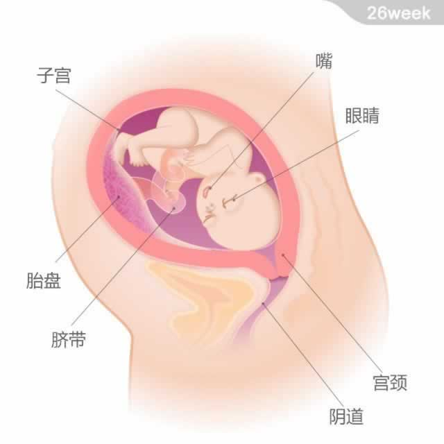

宝宝的重量约为1千克，从头部到臀部的长度约为24厘米。
宝宝的重量约为1千克，从头部到臀部的长度约为24厘米。
宝宝现在真的长大了，几乎沾满了整个子宫的空间。宝宝的脑组织快速发育，大脑皮层表面开始出现沟回。他的眼睛可以开合，并开始形成有规律的睡眠。有些专家认为满28周后宝宝就开始会做梦了。
从现在开始，宝宝会经常打嗝。每一次通常会持续几分钟。打嗝不会让他感觉不适，所以不必担心。此时他对外界声音刺激的反应更加明显了，你要继续给他讲故事、听音乐，这会让他感觉愉快和舒适。